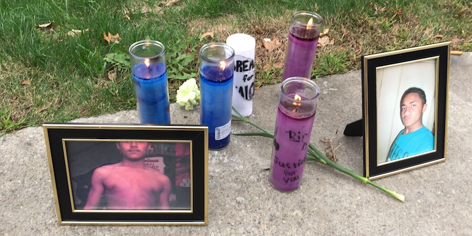

2020-10-25 08:00

Remarks at the Pleasant Street Police station on October 24th, 2020 at the BREATHE for Malcolm march.
My name is David Ehrens. I am a member of the NAACP New Bedford Branch and Bristol County for Correctional Justice.
Many of us have viewed Attorney Brisson’s evidence in Malcolm Gracia’s murder. It deserves a second look — not by the New Bedford Police, which rushed to exonerate its own officers. And not by the Bristol County District Attorney’s Office, which produced a disgraceful whitewash eight years ago. They weren’t up to the job then — and they certainly aren’t now.
We have called for an investigation by the Massachusetts Attorney General’s Civil Rights Division and by the U.S. Department of Justice. But ultimately only community police review commissions with the power to subpoena and fire officers can really address police abuse. Law enforcement institutions and the legislators they lobby show little interest in holding police accountable to the public. This is what I’m talking about:
A Police Department that has called the public “thugs” and cannot be trusted to investigate itself.
A police department that over 2 years paid more than a million and a half dollars in payouts for wrongful deaths.
A DA who defends his predecessor’s whitewash and is personally responsible for some of the highest pre-trial detention and pre-trial death rates in the state
A sheriff who serves as a spokesman for a white supremacist group, abuses ICE detainees, and has the highest jail suicide rate in the state.
An Attorney General who refused to use her Civil Rights Division to investigate those jail suicides and whose predecessor wouldn’t look at the Gracia case.
Representatives on Beacon Hill who — right now — are trying to water down a police accountability bill
Police unions whose contract provisions bar the public from participating in police misconduct commissions.
A mayor who co-opts community voices while refusing to listen to them.
And in this same community we have a school superintendent who began a “community discussion” about police in schools with a police propaganda video.
What these men and women and institutions have in common is that they are all part of a dual system of justice — one in which the law comes down like a ton of bricks on the powerless, while police and the privileged get a pass when they break the same laws.
We’re supposed to be a nation governed by the rule of law. But this is empty rhetoric when every day laws are applied so arbitrarily — or depending on the color of your skin.
This is what has brought us to this march today — to demand equal justice for Malcolm — and for every other Malcolm.
Police reform is not training the public to accept police control. This is how you train a dog. Police reform isn’t singing kumbayah or having coffee with the police. Police reform is changing how communities are policed, and that will NEVER be achieved by ride-alongs, listening sessions, gimmicks or placebos.
Police reform will only come about when WE have the power to hire, fire, train, and discipline police — and when WE get the final say in how our own communities are served.